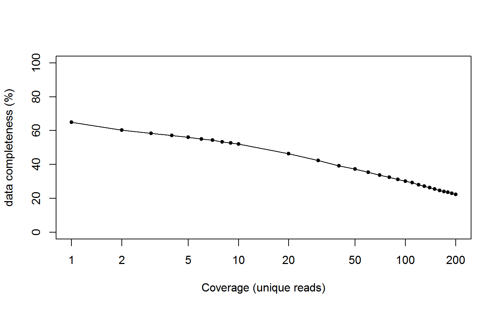

The R package mipmapper package contains a series of functions for analysing and visualising Molecular Inversion Probe (MIP) data. This package is in early stages of development, but will eventually include a range of methods for carrying out population genetic analyses. Full documentation can be found here.
Installation
In R, ensure that you have the devtools package installed by running
install.packages("devtools", repos='http://cran.us.r-project.org')Then we can simply install the mipmapper package directly from GitHub by running
devtools::install_github("mrc-ide/mipmapper")And we can load the package by running
library(mipmapper)Data loading and filtering
Load raw data from .csv file. You will need to change the file path to where you have stored the data. An example of this is shown below, but commented out.
# if loading your own data, uncomment this line and change path to your data
# dat0 <- fast_read("path_to_your_data/NeutralSNPs_AheroYombo.csv")
# here we will use in-built example data
dat0 <- mipmapper_file("dummy_data.csv")Some miscellaneous filtering. Subset to SNPs only (i.e. no more complex mutations), group all alternative alleles together as a single “non-reference” allele, and drop irregular loci (for example non-integer barcode counts).
dat1 <- filter_misc(dat0, SNP_only = TRUE, group_Alt = TRUE, drop_irregular = TRUE)Next we want to filter based on coverage, throwing away any loci that are below a minimum coverage level. We can visualise how much data will be left at different thresholds using the following function:
plot_coverage(dat1)
Choose a threshold that strikes a balance between data quantity and quality. Once you have chosen a threshold, apply the filtering as follows:
my_threshold <- 6
dat3 <- filter_coverage(dat1, min_coverage = my_threshold)Principal Components Analysis
Before carry out PCA analysis we will convert our filtered dataset into a wide format, where each row is an unique sample, with new columns for each locus. This can be achieved as follows:
dat4 <- melt_mip_data(dat3)This can then be used to impute any missing values:
dat5 <- impute_mip_data(dat4)The imputed data set can then be analysed using principal component analysis:
pca <- pca_mip_data(dat5)We can view the variance explained by each compenet graphically using:
plot_pca_variance(pca)And lastly we can plot the actual prinical component analysis, to see how it has clustered our data:
plot_pca(pca, num_components = 2, meta_var = "Country")We can control whether we want to visualise the first 2 or 3 components, with the num_componenets argument:
plot_pca(pca, num_components = 3, meta_var = "Country")